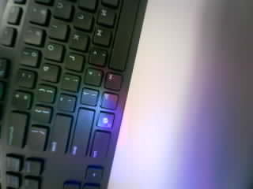
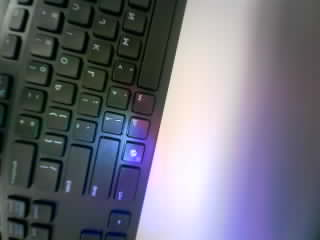

Frame 78: SMALL_CHANGE | 3.167% changed area
Original JPEG · MeasurementsFrame 79: SMALL_CHANGE | 2.521% changed area
Original JPEG · MeasurementsFrame 80: SMALL_CHANGE | 2.208% changed area
Original JPEG · Measurements
Frame 81: SMALL_CHANGE | 0.958% changed area
Original JPEG · Measurements
Frame 82: SMALL_CHANGE | 0.979% changed area
Original JPEG · MeasurementsFrame 83: SMALL_CHANGE | 0.958% changed area
Original JPEG · MeasurementsFrame 84: SMALL_CHANGE | 1.000% changed area
Original JPEG · MeasurementsFrame 85: SMALL_CHANGE | 0.979% changed area
Original JPEG · MeasurementsFrame 86: SMALL_CHANGE | 1.062% changed area
Original JPEG · MeasurementsFrame 87: SMALL_CHANGE | 1.167% changed area
Original JPEG · Measurements